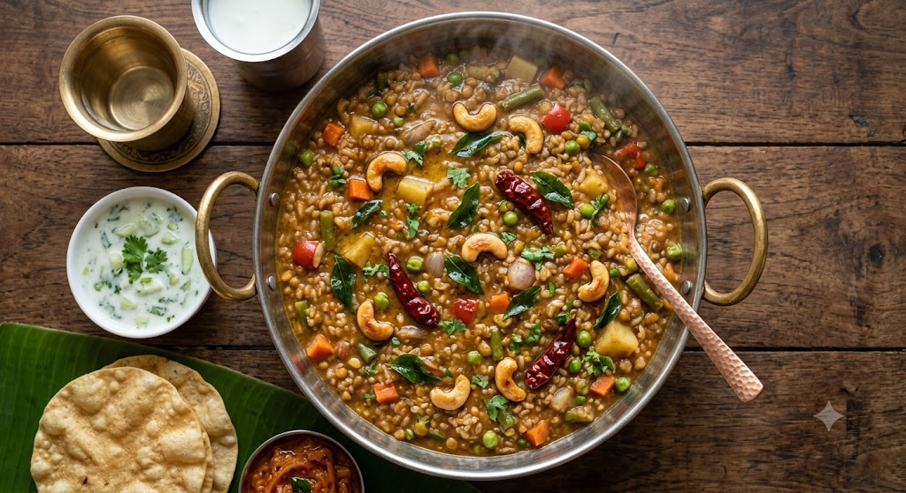

Bisi Bele Bath
⭐⭐⭐⭐⭐ 4.8 Rating | ⏱ 55 Minutes | 🍽 4 Servings
Category
Main Course
Difficulty
Medium
Calories
490 kcal
Cooking Style
Slow-simmering
📋 Ingredients
- 1 cup rice
- 1/2 cup toor dal (pigeon peas)
- 1/4 tsp turmeric
- 1.5 cups mixed chopped veggies (carrots, beans, green peas, pearl onions/shallots, capsicum, potato)
- 1 tbsp tamarind paste
- 1 tbsp jaggery/brown sugar
- salt to taste
- 2 tbsp ghee
- 1 tbsp chana dal
- 1 tsp urad dal
- 2 tbsp coriander seeds
- 1 tsp cumin
- 1/2 tsp fenugreek seeds
- 4-5 Byadgi red chilies
- 1 inch cinnamon stick
- 2 cloves
- 2 tbsp dry coconut (copra)
- 1 tsp mustard seeds
- 10-12 cashew nuts
- 8-10 curry leaves
- pinch of asafoetida (hing)
- 1 tbsp ghee
🍳 Required Utensils
- Pressure cooker (4–5 liter capacity)
- Small pan for tempering
- Heavy-bottomed mixing pot or broad kadai
- Spice grinder / mixer jar
- Ladle for stirring
📖 Introduction
Bisi Bele Bath (translating to "Hot Lentil Rice") is a traditional, classic one-pot dish originating from Karnataka, India. Made by pressure-cooking rice, pigeon peas (toor dal), mixed vegetables, tamarind, and a distinct freshly ground aromatic spice mix (Bisi Bele Bath powder), it is famous for its rich, tangy, and comforting porridge-like consistency.
🔬 Principle
The culinary principle relies on simultaneous gelatinization and starches starch-emulsification under pressure. Cooking rice and lentils together until mashable allows the starch from both to bind with tamarind extract, ghee, and freshly ground spices, creating a thick, cohesive, non-grainy stew texture.
👨🍳 Procedure
- Rinse rice and toor dal together, add 4 cups water and turmeric, and pressure cook for 4-5 whistles until soft and mashable.
- Dry roast all the spice masala ingredients on low heat until fragrant, cool down, and grind into a fine powder.
- In a separate pot, boil the chopped vegetables in 2 cups of water with a pinch of salt until tender.
- Add tamarind paste, jaggery, and the ground spice powder to the cooked vegetables; simmer for 5 minutes until raw aroma disappears.
- Add the cooked rice-dal mash to the vegetable spice mixture, pour 1 cup hot water to adjust consistency, and simmer for 5-7 minutes on low heat.
- Heat ghee in a pan, fry cashews, mustard seeds, curry leaves, and asafoetida until golden, then pour over the hot dish and stir well.
⚠ Precautions
- Fenugreek seeds (methi) in the spice mix can turn the dish bitter if over-roasted or used in excessive amounts.
- Generous ghee usage increases calorie count; adjust ghee portions if keeping fat intake low.
💡 Chef Tips
- Authentic color and aroma come from Karnataka's Byadgi chilies, which offer deep red color with mild heat.
- Bisi Bele Bath thickens rapidly as it cools; keep hot water ready to dilute it to a flowing porridge texture before serving.
- Use dry coconut (copra) instead of fresh coconut for the traditional spice blend depth.
🥗 Nutrition Facts
| Nutrient | Amount |
|---|---|
| Calories | 320 kcal |
| Protein | 10 g |
| Carbohydrates | 52 g |
| Fat | 9 g |
🍽 Serving Suggestions
- Serve piping hot topped with extra melted ghee alongside potato chips, Khara Boondi, or fried papad (sandige).
- Pair with cool cucumber raita on the side to balance the spice.
✅ Result
Soft, porridge-like, and smooth with tender vegetables and a glossy ghee finish.Spicy, aromatic, tangy, and mildly sweet (from jaggery) with a rich, nutty undertone.
🎥 Watch Recipe Video
Learn the complete recipe by watching the step-by-step video.
▶ Watch on YouTube